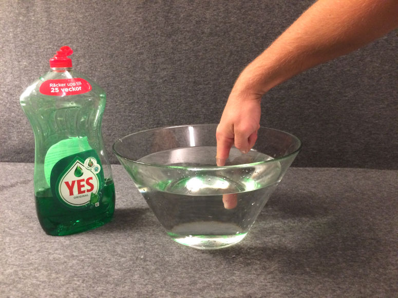
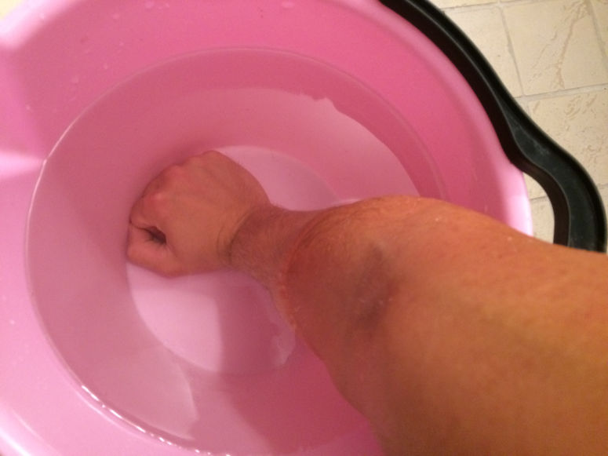
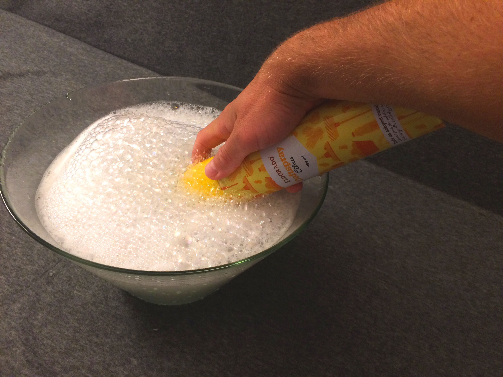
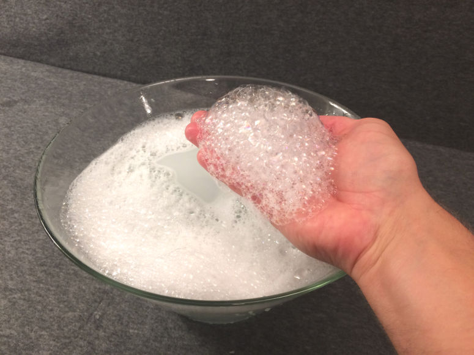
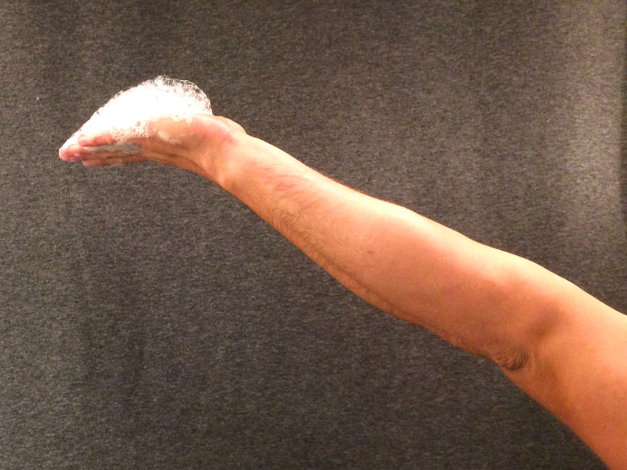
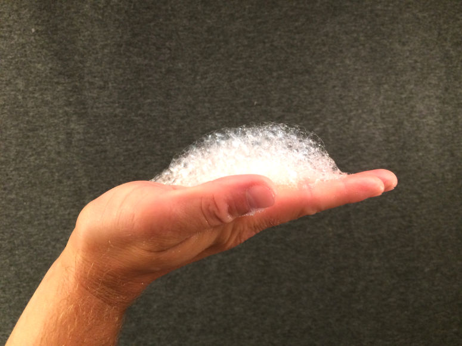
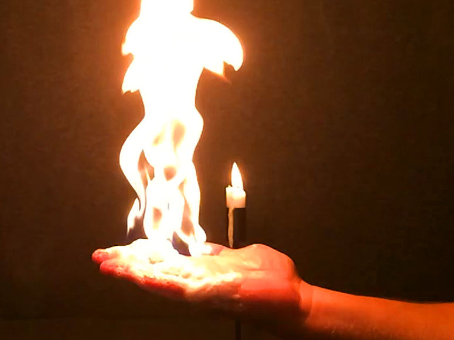
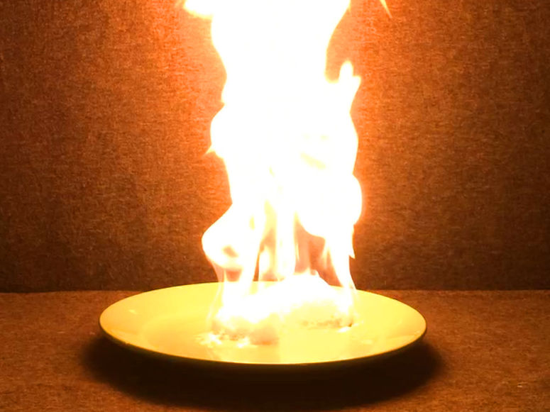

Весёлые и простые научные эксперименты для детей и взрослых.
Специально:
Огненные пузыри

Физика
Держите огонь в руке! Это эксперимент о энергии, тепле, давлении, состояниях вещества, химических реакциях и воде.
| Нравится: | Поделиться: | |
Видео

Материалы
- 1 аэрозольный освежитель воздуха
- 1 большая миска
- Жидкое средство для мытья посуды
- 1 зажигалка или горящая свеча (для поджигания пузырей)
- Вода
- Средства безопасности: 1 огнетушитель, 1 ведро воды, 1 пара защитных очков
Внимание!
Существуют следующие риски:- Что-то может загореться.
- Кто-то может обжечься.
- Проводите демонстрацию в присутствии взрослого с опытом обращения с огнём.
- Наденьте защитные очки.
- Держите огнетушитель наготове.
- Держите ведро с водой наготове.
- Рука, которую вы будете использовать, должна быть тщательно смочена водой.
- Держите пузыри как можно дальше от лица. Также держите руку выше уровня волос, ладонью вверх. Ладонь должна быть плоской.
- Если потолок низкий — сядьте на стул.
- Не проводите демонстрацию на улице, так как даже слабый ветер может направить пламя к вашему лицу.
- Потренируйтесь, что делать, если что-то загорится или кто-то обожжётся.
Шаг 1


Шаг 2

Шаг 3

Шаг 4

Шаг 5

Шаг 6

Шаг 7

Краткое объяснение
В пузырях вы поймали горючий газ из баллончика. Когда вы подносите зажигалку к пузырям, газ нагревается и начинает гореть. Вы не обжигаетесь, потому что вода в пузырях и на руке поглощает тепло.Подробное объяснение
Аэрозольный баллончик — это гениальное изобретение 1920-х годов норвежца Эрика Ротхейма. В баллончике обычно смешаны две жидкости. Одна — это сам продукт, то есть то, что вы хотите получить, покупая баллончик. Это может быть, например, инсектицид, краска, дезодорант, пена для бритья или жидкость для освежителя воздуха. Вторая жидкость нужна для выталкивания продукта из баллончика. Она называется пропеллентом. Пропеллент — это на самом деле газ при комнатной температуре. Но при производстве в баллончик закачивают столько пропеллента, что он становится жидким. Газ становится жидким, если давление достаточно высокое (или температура достаточно низкая).Когда вы нажимаете на распылитель, открывается клапан, и выходят и пропеллент, и продукт. В распылителе продукт распыляется на мелкие капли. Одновременно пропеллент превращается в газ (закипает) из-за низкого давления. В пене для бритья, например, пропеллент остаётся в виде пузырьков и превращает продукт в пену, но больше никакой функции не выполняет.
Можно подумать, что давление в баллончике уменьшается с каждым нажатием, но это не так. Потому что часть жидкого пропеллента постоянно превращается в газ и восстанавливает давление. Когда вы начинаете использовать баллончик, в нём содержится не только жидкая смесь продукта и пропеллента, но и слой пропеллента в газообразном состоянии над этой смесью.
В освежителях воздуха обычно используют пропеллент из алканов. В освежителе на фото было 50 % бутана и 50 % пропана, и мы будем использовать этот состав как пример. Все алканы при достаточно высокой температуре реагируют с кислородом, то есть горят. Поэтому на баллончике есть знак "огнеопасно".
Когда вы распыляете баллончик в мыльную воду, образуются пузыри. Это обычные мыльные пузыри, состоящие из слоя воды, окружённого слоем средства для мытья посуды с обеих сторон. Но в этих пузырях не воздух, а алканы бутан и пропан (а также небольшие капли лимонной жидкости). Алканы прозрачны, как воздух, но, в отличие от воздуха, легко воспламеняются.
Когда вы подносите зажигалку к пузырям, газ в них нагревается настолько, что начинает гореть. В этот момент бутан и пропан быстро реагируют с кислородом и образуют воду и углекислый газ. Эта химическая реакция экзотермическая, то есть выделяет энергию. В ходе этой реакции выделяется энергия в виде излучения (в том числе света) и тепла. Поскольку энергия не может быть создана или уничтожена, а только преобразована, возникает вопрос: откуда взялась эта энергия? Когда молекулы бутана, пропана и кислорода образовывались (когда бы это ни было), для перемещения электронов в этих молекулах требовалась энергия, чтобы атомы оставались вместе. Эта энергия запасалась как потенциальная энергия в этих молекулах, называемая химической энергией. То есть до того момента, когда электроны в этой реакции переместились в менее энергозатратные положения в новых молекулах.
Пламя в этом эксперименте состоит из пропана, бутана и кислорода, которые превращаются в воду и углекислый газ, а также излучаемой энергии (света) и тепла, которые образуются как побочный продукт. Возможно, часть пламени содержит пропан, бутан и/или кислород, которые настолько нагрелись, что ионизировались. Это значит, что некоторые электроны полностью отделились. Это состояние называется плазмой и именно в таком состоянии находятся вещества на Солнце. Но неясно, выделяется ли в этой реакции столько тепла, чтобы происходила ионизация — для наших глаз горящая плазма и горящий газ выглядят почти одинаково.
Главный вопрос: почему вы не обжигаете руку в этом эксперименте? Ответ — вода. Вода на руке и в пузырях поглощает большую часть энергии, выделяющейся в экзотермической реакции.
Температура — это мера того, насколько быстро движутся частицы вещества. В холодной воде молекулы воды двигаются мало, в горячей — много. Но для нагрева воды требуется много энергии, чтобы молекулы начали двигаться. Это потому, что большая часть энергии уходит на изгиб и разрыв водородных связей между молекулами воды. Много энергии поглощается этим процессом, а не на разгон молекул. Поэтому воду можно долго нагревать, а она всё равно остаётся относительно прохладной. Другими словами, вода обладает высокой теплоёмкостью.
Вариант

Этот эксперимент также известен как "метановая мамба", но в этом случае используется метан вместо аэрозоля. Метан нужно покупать в специальных магазинах и соблюдать особые меры безопасности. Результат практически тот же.
| Нравится: | Поделиться: | |
Содержание сайта
© Архив Экспериментов. Весёлые и простые научные эксперименты для детей и взрослых. Биология, химия, физика, науки о Земле, астрономия, технологии, огонь, воздух и вода. Для детского сада, школы, дома и научных проектов. Также научные проекты и пособие для учителя.
Наверх
© Архив Экспериментов. Весёлые и простые научные эксперименты для детей и взрослых. Биология, химия, физика, науки о Земле, астрономия, технологии, огонь, воздух и вода. Для детского сада, школы, дома и научных проектов. Также научные проекты и пособие для учителя.
Наверх